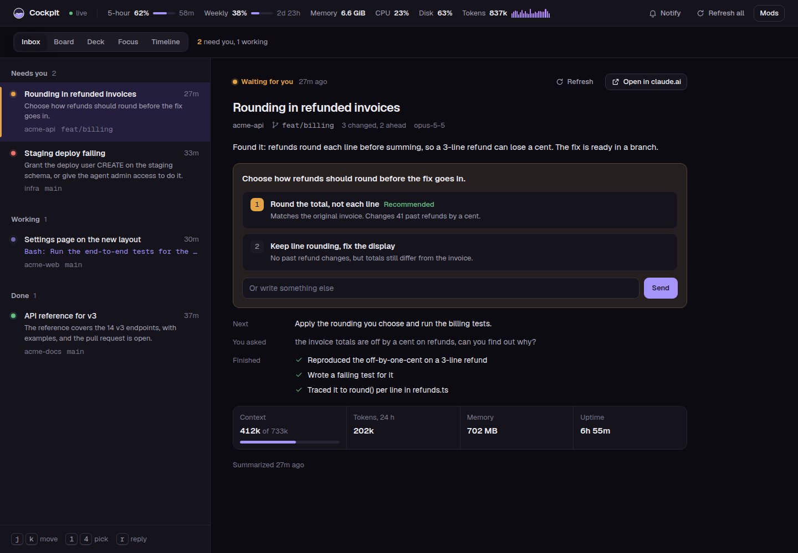
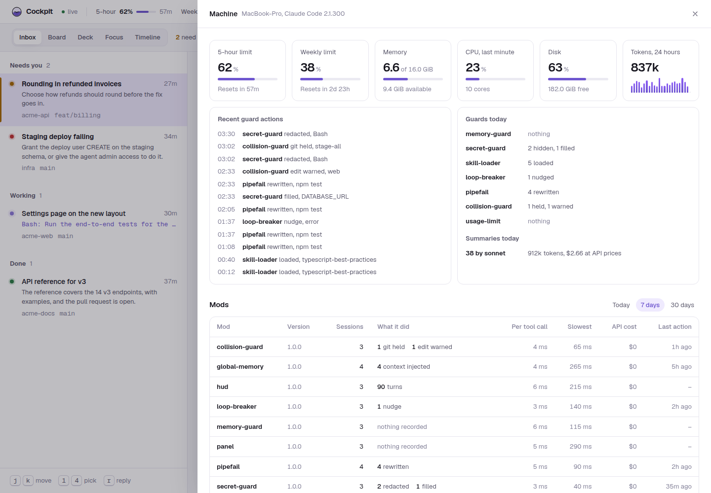

O Cockpit é um pacote de 12 mods para o Claude Code. Os guardas barram o erro de um agente antes de ele custar caro: um segredo na saída de uma ferramenta, um pipe que esconde um teste reprovado, um build morto por falta de memória, um commit que leva junto a edição de outra sessão. Os instrumentos mostram em que ponto a sessão está, embaixo do prompt, embaixo do spinner e numa página com todas as sessões da máquina.
claude plugin marketplace add joaosavi/cockpit
claude plugin install cockpit@cockpit
1
Instale o pacote
No terminal, adicione o marketplace e instale o cockpit. Ele traz os 12 mods como dependência.
Reinicie o Claude Code e digite /cockpit:setup. Ele faz quatro perguntas com prévia, grava a status line, a dica do spinner e o momento de compactar, e guarda um backup do arquivo que mudou.
Claude Code 2.1.287 ou mais novo, no macOS, no Windows ou no Linux. Os mods usam os function hooks do Claude Code, que estão em acesso antecipado e podem mudar de uma versão para outra.
Node 22.18 ou mais novo, para o script da status line.
Python 3.9 ou mais novo e curl, para a página do panel. O macOS e o Windows 10 em diante já trazem o curl.
Uma Nerd Font no terminal, para os ícones da status line. Sem ela, escolha os ícones simples no setup.
A status line, a linha do spinner e os painéis fazem parte da interface de terminal do Claude Code. Rode o claude num terminal: Terminal ou iTerm no macOS, Windows Terminal ou PowerShell no Windows, ou o terminal do VS Code e do JetBrains. Os mods não foram testados no app Desktop nem no chat das extensões de IDE.
Dois comandos no terminal, um reinício e um setup de quatro perguntas. Leva uns cinco minutos.
Instalar
Adicione o marketplace e instale o pacote
terminal
claude plugin marketplace add joaosavi/cockpit
claude plugin install cockpit@cockpit
O segundo comando lista os mods que instala, como + 12 dependencies.
Reinicie o Claude Code
A sessão nova carrega os mods. Uma sessão que já estava aberta pega com /reload-plugins.
Rode o setup
dentro do Claude Code
/cockpit:setup
Um plugin não consegue gravar sozinho a status line, a dica do spinner e o momento de compactar, porque esses ficam no seu settings.json. O setup faz isso, guarda um backup do arquivo que mudou e diz o que você vai notar.
O que o setup pergunta
Pergunta
Opções
Estilo da status line
refined (recomendado), blocks, minimal ou compact, cada um com a prévia desenhada pelo script de verdade, com a sua pasta e a sua branch.
Ícones
O setup imprime três ícones da Nerd Font e pergunta se aparecem. Se aparecem caixas, ele usa setas e marcas simples, que todo terminal desenha.
Fuso horário
Só quando o sistema está em UTC. Vale para os horários que os mods mostram e para o que conta como hoje.
Quando compactar
Mais cedo, em uns 70% de um modelo de 1M (recomendado, 733000), o padrão do Claude Code perto do fim, ou na metade (500000). Pulada em modelo com janela menor que 200K.
O setup também liga a atualização automática do marketplace, sem perguntar. Rode /cockpit:setup de novo quando quiser mudar uma resposta: ele lê o que está gravado e pergunta só o que falta.
Conferir
terminal
claude plugin list
Aparecem 13 entradas terminadas em @cockpit, cada uma enabled: o pacote e os 12 mods. Uma entrada failed to load é versão fora de passo; veja Algo quebrou?.
Atualizações chegam sozinhas
Com a atualização automática ligada, o Claude Code atualiza cada mod que tem versão nova uns minutos depois da primeira mensagem de uma sessão, instala o mod que entrou no pacote e mostra Plugin updated: <nome> · Run /reload-plugins to apply. Para desligar, abra /plugin, vá em Marketplaces e escolha cockpit.
macOS, Windows e Linux
Todos os mods rodam nos três sistemas, e foram testados só no Linux. Duas coisas mudam:
O memory-guard e a memória do hud leem os limites de cgroup e o /proc/meminfo no Linux. No macOS leem o vm_stat, no Windows o PowerShell, e ali comparam com a memória da máquina inteira. As leituras do macOS e do Windows foram testadas só contra saída simulada.
A página do panel mostra memória por cgroup, serviços do systemd e a fatia de CPU esperando disco só no Linux.
No Windows, o setup aponta a status line para o Node em vez do script .sh, porque o PowerShell não roda shell script.
No plano Team ou Enterprise
Todo mod funciona igual em qualquer plano, menos o global-memory. O Team e o Enterprise rodam um guarda embutido que ignora plugin instalado pelo usuário nos dois hooks de que ele precisa, então ele instala e não faz nada até a sua organização listá-lo nas managed settings. Os outros mods rodam normalmente. A página do global-memory mostra as duas configurações.
Vindo do marketplace agent
O Cockpit se chamava agent até outubro de 2026. Troque toda chave @agent por @cockpit no ~/.claude/settings.json e rode claude plugin marketplace remove agent antes dos passos acima. Remover um marketplace apaga as opções salvas dos plugins dele, então troque as chaves antes, ou rode /cockpit:setup de novo depois.
Depois do setup e de um reinício, três coisas aparecem na tela. Os guardas não aparecem até agir.
A status line
O hud desenha duas linhas embaixo do prompt: modelo, pasta, branch e as mudanças dela, depois o contexto usado, as janelas de 5 horas e de 7 dias do plano e a folga de memória.
As barras vão do verde ao vermelho conforme enchem. O 2h20m depois da porcentagem de 5 horas é o tempo até essa janela reiniciar. Os outros três estilos estão na página do hud.
A linha embaixo do spinner
Enquanto um turno roda, o Claude Code mostra uma dica embaixo do spinner. O spinner-status troca essa dica por uma linha do Haiku sobre o que o agente está fazendo agora.
claude · ~/acme-api
✻ Propagating… (6s · ↓ 90 tokens)⎿Now: Running the tests after the fix to the date filter
Now: é o ponto em que a sessão está. Mods: é uma dica sobre os mods instalados.
A página das sessões
O panel sobe uma página local com todas as sessões da máquina. Digite /panel para o endereço.
Abra o endereço no navegador. A sessão que espera você vem primeiro, com as opções que ela ofereceu em botões. A página do panel mostra as cinco vistas.
Comandos para testar
Comando
O que mostra
/limit
As janelas do plano, quando cada uma reinicia e o que o mod segura perto do limite.
/hud
A visão completa: sessão, limites, memória, o que roda agora e as ações dos mods hoje.
/ram
A folga de memória por grupo, ou da máquina, e o pico medido de cada comando pesado.
Quando um guarda age
O agente lê uma nota curta que começa com o nome do mod, como pipefail: ou Loop check, e costuma contar para você. A última nota também aparece na faixa acima do prompt enquanto o turno roda.
Esconde o valor de todo segredo na saída das ferramentas antes de o agente ler.
Por que
Um segredo que chega à conversa vai para o modelo e fica no log da sessão, e a partir daí precisa ser trocado. A saída de ferramenta vaza segredo fácil: env, cat .env, um stack trace com string de conexão. O mod troca cada valor por <hidden:NOME> em todo resultado de ferramenta, nativa, de MCP ou de subagente.
O que faz
Os valores vêm do arquivo de segredos e de todo arquivo na pasta ao lado com o mesmo nome mais .d (~/.secrets.d/ por padrão), de todo .env* embaixo da raiz de .env (5 níveis), quando você define uma, de variável de ambiente com nome de segredo (TOKEN, SECRET, PASSWORD, KEY, AUTH e outros) e da senha de toda URL esquema://usuario:senha@.
Formatos conhecidos ficam escondidos mesmo fora de qualquer lista: GitHub, Anthropic, OpenAI, AWS, Google, Stripe, Slack, JWT e bloco de chave privada. Aparecem como <hidden:github>, <hidden:jwt> e assim por diante.
Uma ferramenta que entrega segredo, como a CLI de um cofre de senhas, pode manter a própria lista NOME="valor" num arquivo da pasta de segredos sem mexer no seu arquivo. Arquivo com nome começando por ponto é ignorado, para a ferramenta gravar um temporário e renomear.
Um valor que também aparece num arquivo .example já é público e continua visível.
Quando o agente escreve <hidden:NOME> num .env ou no arquivo de segredos, o mod grava o valor real no lugar. O agente edita esses arquivos sem nunca ver um valor.
Quando o agente escreve <hidden:NOME> num comando Bash, o mod roda o comando com o valor real, e a saída volta escondida. A conversa guarda o comando como foi escrito. O agente chama uma API com um token que nunca viu.
Um marcador que o mod não consegue preencher barra o comando: um token conhecido só pelo formato, ou um nome com dois valores diferentes nos seus arquivos, como o mesmo DATABASE_URL em dois projetos. O agente recebe a instrução de ler o valor dentro do comando, da variável ou do .env.
Se o próprio mod falha, ele retém a saída em vez de deixar passar sem conferir.
Opções
Opção
Padrão
O que faz
enabled
true
Desligado, o mod não faz nada: todo valor aparece na saída como é. Vale na próxima sessão, ou depois de /reload-plugins.
secretsFile
~/.secrets
Arquivo CHAVE=valor em que todo valor é segredo, qualquer que seja o nome.
envRoot
vazio
Pasta onde procurar arquivos .env, 5 níveis abaixo. Vazio não procura nenhum.
minLength
12
Valor mais curto fica de fora, menos formato conhecido e valor dos arquivos de segredos.
fillCommands
true
Roda o comando Bash que nomeia <hidden:NAME> com o valor real. Desligado, esse comando não roda, e o agente recebe a instrução de ler o valor dentro do comando.
Por padrão o mod não lê nenhum .env. Para cobrir os .env dos seus projetos, aponte envRoot para a pasta dos repos, como ~/code. O mod varre a pasta ao começar, procura .env novo no máximo uma vez por minuto e refaz a lista pelo menos a cada 10 minutos.
O que grava
~/.local/state/mods/secret-guard/<dia>-<sessão>.jsonl: uma linha a cada lista refeita (com o tempo que levou), resultado escondido, marcador devolvido ou preenchido num comando e comando barrado, só com nome de segredo e contagem, mais uma linha session-summary. Os valores vivem só na memória do mod, nunca em disco. Cada linha tem at, session e event.
Custo
O hook somou uns 64 ms por chamada de ferramenta na máquina Linux do autor (60 chamadas medidas em outubro de 2026, estimativa), com envRoot numa pasta de uns 140 subdiretórios. A maior parte é conferir se um arquivo de origem mudou.
Limites
Um segredo mais curto que minLength e fora de formato conhecido fica visível. Valor do arquivo de segredos ou da pasta dele é escondido a partir de 6 caracteres, porque um cofre entrega senha de 8 a 11; abaixo de 6 é PIN ou palavra, e esconder embaralharia saída comum.
Um segredo que o agente viu antes de o mod carregar continua na conversa.
Um .env fora do envRoot não é lido, e os valores dele ficam visíveis se nenhuma outra fonte tiver.
Preencher um marcador num comando deixa o agente usar o segredo, inclusive mandar para um servidor. Ele não faz mais do que já faria com source .env, mas o comando roda sem pedir permissão própria.
Os marcadores só são preenchidos em comando Bash. No Windows sem Git Bash, um comando PowerShell com marcador roda como foi escrito. A saída de toda ferramenta continua escondida.
Testado só no Linux. Os caminhos do macOS e do Windows têm teste unitário com ambiente simulado.
Instalar só este mod
O pacote cockpit já instala o secret-guard com os outros. Para ter só ele:
terminal
claude plugin marketplace add joaosavi/cockpit
claude plugin install secret-guard@cockpit
Avisa quando duas sessões da mesma máquina mexem nos mesmos arquivos, e segura uma vez o comando git que levaria junto a edição não commitada da outra sessão.
Por que
Rodar várias sessões ao mesmo tempo é comum, e duas delas caem no mesmo repo com frequência. Na máquina Linux do autor, 11 pares de sessões editaram o mesmo repo com menos de 30 minutos de diferença em 8 dias, e 5 desses pares editaram o mesmo arquivo. O Edit do Claude Code já recusa um arquivo que mudou depois da leitura, então uma sessão não sobrescreve a outra em silêncio. O que ele não pega é o git: git add -A ou git commit -a numa sessão leva a edição pela metade da outra, e git stash, checkout ou reset --hard move ou descarta essa edição.
O que faz
Cada sessão mantém um registro em ~/.local/state/mods/collision-guard/sessions/<sessão>.json com os arquivos que editou. Só ela escreve nele.
Depois de uma edição, quando outra sessão viva também editou o arquivo e o git ainda mostra a mudança dela, o agente lê uma nota com o nome da sessão e há quanto tempo, e você vê um aviso. Fora de repo git, a outra edição vale por windowMinutes. Cada edição da outra sessão avisa uma vez.
Antes de um comando git que faria stage, commit, stash, troca de branch ou descarte da edição não commitada de outra sessão, o mod segura o comando e lista os arquivos. O agente pode nomear só os arquivos dele, ou rodar o mesmo comando de novo em até 2 minutos para passar.
Lê o cd do começo da linha e o git -C <pasta> para achar o repo. Texto entre aspas, como a mensagem de commit, não conta como comando.
Um comando que nomeia caminhos, como git add -A mods/ ou git checkout -- src/a.ts, só é segurado pelas edições da outra sessão embaixo desses caminhos. Curinga ou :/ conta como o repo inteiro.
Sessão encerrada marca o registro, e registro mais velho que expireHours sai quando uma sessão começa.
Opções
Opção
Padrão
O que faz
enabled
true
Desligado, o mod não faz nada: nada é registrado, nada avisa, nenhum git é segurado. Vale na próxima sessão, ou depois de /reload-plugins.
git
confirm
confirm segura uma vez o comando git arriscado. note deixa rodar e avisa o agente depois. off não mexe em comando git.
windowMinutes
30
Por quanto tempo a edição de outra sessão num arquivo fora de repo git ainda conta. Dentro de um repo, conta enquanto o git mostrar o arquivo como mudado.
expireHours
24
Sessão calada por esse tempo conta como encerrada, e o registro dela sai.
editWarnings
true
Avisa o agente, com um aviso na tela, quando outra sessão editou o mesmo arquivo. Desligado, as edições continuam registradas, então as outras sessões e a trava do git ainda as veem.
O que grava
~/.local/state/mods/collision-guard/<dia>-<sessão>.jsonl: uma linha por aviso (edit-warned, git-held, git-confirmed, git-noted) com a operação git e quantos arquivos, nunca o conteúdo, mais uma linha session-summary. Cada linha tem at, session e event.
Custo
Chamada que não é edição nem git não custa nada mensurável. Uma edição lê os registros das outras sessões e roda git rev-parse uma vez por pasta; quando outra sessão editou o mesmo arquivo, roda também git status nele. No primeiro teste real, a edição que achou colisão levou 444 ms de hook, e as outras menos de 60 ms (7 chamadas, outubro de 2026).
Limites
As sessões precisam dividir a máquina e a pasta home. Sessão em outro computador, ou num container com home própria, não aparece.
Arquivo mudado por comando Bash (sed -i, um script, um formatador) não conta como edição. Só Edit, Write, MultiEdit e NotebookEdit contam.
git checkout <nome> lê igual com branch ou arquivo, então a nota diz "para outra branch ou uma versão antiga".
Testado só no Linux. No Windows, os caminhos são comparados com barra normal, como o git imprime, e comando git pela ferramenta PowerShell é conferido como no Bash. Um cd para caminho do Git Bash como /c/work não é seguido.
Instalar só este mod
O pacote cockpit já instala o collision-guard com os outros. Para ter só ele:
terminal
claude plugin marketplace add joaosavi/cockpit
claude plugin install collision-guard@cockpit
Põe set -o pipefail; num comando que passa um teste, typecheck ou lint por tail, head ou grep.
Por que
Um pipeline sai com o código do último comando. yarn test | tail -20 sai com 0 quando o teste reprova, porque o tail deu certo, e o agente lê aprovado. Reescrever o comando não custa nada e poupa o agente de uma conclusão errada.
O que faz
Reconhece o executor onde ele roda: yarn, npm run, pnpm ou bun run com test, e2e, typecheck, lint, check e parecidos, ou com um script listado em extraRunners, e também turbo run, vitest, jest, playwright test, tsc, vue-tsc, eslint, pytest, go test e cargo test. Texto entre aspas e corpo de heredoc não contam.
Põe set -o pipefail; na frente, roda e avisa o agente que um | head pode fazer o executor sair com 141 (SIGPIPE).
Deixa em paz um comando que já fala em pipefail.
o que o mod reescreve
yarn test | tail -20
# vira
set -o pipefail; yarn test | tail -20
Opções
Opção
Padrão
O que faz
enabled
true
Desligado, o mod não faz nada: nenhum comando é reescrito. Vale na próxima sessão, ou depois de /reload-plugins.
extraRunners
lista vazia
Nomes de script que também contam como executor quando um gerenciador de pacotes chama: yarn <nome>, npm run <nome>, pnpm <nome>, bun run <nome>.
Ponha aqui o script de checagem do repo quando o código de saída dele diz se o código funciona, como um verify que roda lint, tipos e testes. O mod passa a reescrever yarn verify | tail também.
O que grava
~/.local/state/mods/pipefail/<dia>-<sessão>.jsonl: uma linha por reescrita com o executor (yarn vitest, nunca o comando inteiro), mais uma linha session-summary. Cada linha tem at, session e event.
Custo
O hook somou uns 2 ms por chamada Bash na máquina Linux do autor (56 chamadas medidas em outubro de 2026, estimativa).
Limites
Só tail, head e grep como filtro. sed, awk e outros ficam de fora.
Executor escondido dentro de um script que o comando chama não aparece.
Só a ferramenta Bash. No Windows sem Git Bash, os comandos passam pela ferramenta PowerShell e o mod não mexe. Testado só no Linux.
Instalar só este mod
O pacote cockpit já instala o pipefail com os outros. Para ter só ele:
terminal
claude plugin marketplace add joaosavi/cockpit
claude plugin install pipefail@cockpit
Mantém typecheck, build, teste e Playwright dentro do limite de memória, e repete com um processo só o comando morto com exit 137. No Linux, o limite é o cgroup mais apertado ou a memória da máquina; no macOS e no Windows, a memória da máquina.
Por que
No Linux, quando a memória acaba ou um cgroup bate no memory.max, o kernel mata o maior processo, que quase sempre é o comando pesado, e o agente vê exit 137 sem saber por quê. O mod confere a folga antes do comando pesado e adapta o comando a ela.
O que faz
Antes de um comando pesado, o mod compara o pico esperado com a folga, menos a margem. A folga é a memória disponível da máquina, ou o que sobra embaixo do limite de cgroup mais apertado quando a sessão roda num, como num serviço do systemd ou num container:
Cabe
Roda como veio.
Só cabe um processo
O mod põe --concurrency=1, --workers=1 ou --maxWorkers=1 e avisa o agente.
Não cabe nada
Espera até waitSeconds a memória liberar.
Não liberou
Recusa o comando e diz ao agente o que está usando a memória.
Depois do comando, o mod guarda o pico medido para a próxima estimativa e repete com um processo o comando que morreu com exit 137. Até medir um comando, as estimativas são 1 GB para typecheck e build, 600 MB para teste e 500 MB para Playwright.
Sem limite de cgroup, como na maioria dos desktops e notebooks Linux, a folga é o MemAvailable do /proc/meminfo. No macOS são as páginas livres, inativas, especulativas e purgáveis do vm_stat contra o total de sysctl -n hw.memsize. No Windows é o FreePhysicalMemory contra o TotalVisibleMemorySize, lidos pelo PowerShell. Com limite de cgroup, conta o working set: memory.current menos inactive_file, que o kernel libera antes de matar alguém.
Comandos
/ram mostra a folga, o uso e os limites de cada cgroup quando há, e os picos medidos. Diz que não há leitura quando o sistema não dá nenhuma. No terminal abre também a janela Memory, com uma barra por cgroup e a marca do alto, atualizado a cada 2 segundos. r atualiza e esc fecha.
Opções
Opção
Padrão
O que faz
enabled
true
Desligado, o mod não faz nada: comando pesado roda como veio, e o /ram some. Vale na próxima sessão, ou depois de /reload-plugins.
margin
2
Porcentagem de memória mantida livre: do memory.max de cada cgroup, ou do total da máquina sem limite de cgroup. A marca do alto só conta para cgroup sem max.
waitSeconds
120
Quanto tempo um comando pesado espera memória antes de ser recusado.
reduce
true
Quando só cabe um processo, põe --concurrency=1, --workers=1 ou --maxWorkers=1.
wait
true
Quando nada cabe, espera até waitSeconds. Desligado, o passo seguinte vem na hora.
refuse
true
Quando a memória não libera, recusa o comando. Desligado, ele roda como veio e pode morrer.
retry137
true
Repete com um processo só o comando morto com exit 137.
O que grava
~/.local/state/mods/memory-guard/<dia>-<sessão>.jsonl: uma linha por comando reduzido, recusado ou repetido e por pico medido, mais uma linha session-summary com o tempo que os comandos esperaram.
Os últimos 3 picos medidos de cada comando, no armazenamento comum dos mods, em peaks.
Custo
O hook somou uns 4 ms por chamada Bash na máquina Linux do autor, sem contar a espera por memória (56 chamadas medidas em outubro de 2026, estimativa). Cada comando pesado lê os arquivos de memória uma vez por segundo enquanto roda, para medir o pico. No macOS e no Windows a leitura roda um comando e vale por 10 segundos: sysctl e vm_stat levam poucos milissegundos, e o PowerShell cerca de um segundo para abrir (estimativa).
Limites
O pico é medido no cgroup inteiro, ou na máquina sem cgroup, então outra sessão começando junto infla a medida. Guardar só as 3 últimas deixa a inflada envelhecer.
O tsc não tem flag de processo único, então typecheck que não cabe espera ou é recusado.
Comando em segundo plano volta na hora e não dá medida.
As leituras do macOS e do Windows foram testadas só contra saída simulada de vm_stat, sysctl e PowerShell. Ali a folga é da máquina inteira, sem limite por sessão, e a leitura pode ter até 10 segundos.
Quando a leitura falha, o comando pesado roda como veio, nada espera nem é recusado e nenhum pico é guardado. /ram diz que não há leitura. A repetição com um processo depois de exit 137 continua valendo.
Instalar só este mod
O pacote cockpit já instala o memory-guard com os outros. Para ter só ele:
terminal
claude plugin marketplace add joaosavi/cockpit
claude plugin install memory-guard@cockpit
Percebe quando o agente anda em círculo e manda ele parar e mudar de abordagem.
Por que
Um agente que segue editando o mesmo arquivo depois da mesma falha gasta token e tempo sem chegar mais perto. Um empurrão curto na hora certa faz ele dar um passo atrás, o que uma regra no CLAUDE.md não garante.
O que faz
O mod conta três sinais por loop do agente (a conversa principal e cada subagente), zerados no fim de cada turno:
Tentativas de correção: edições num arquivo enquanto um comando que falhou não passou de novo.
Erros repetidos: o mesmo erro voltando, ignorando números, caminhos e valores entre aspas.
Chamadas repetidas: a mesma ferramenta com os mesmos argumentos, em sequência.
Quando uma contagem chega ao limite, o mod acrescenta uma nota ao resultado da ferramenta. A nota começa com Loop check e pede ao agente que escreva o que tentou e depois releia o código, forme uma hipótese nova ou pergunte a você. Nada é recusado.
Opções
Opção
Padrão
O que faz
enabled
true
Desligado, o mod não faz nada: nada é contado, nenhum empurrão. Vale na próxima sessão, ou depois de /reload-plugins.
editLimit
5
Tentativas de correção num arquivo, num turno, antes do empurrão.
errorLimit
3
Vezes que o mesmo erro pode voltar num turno antes do empurrão.
repeatLimit
3
Chamadas idênticas em sequência antes do empurrão.
editCheck
true
Empurra depois de editLimit tentativas de correção num arquivo.
errorCheck
true
Empurra depois de o mesmo erro voltar errorLimit vezes.
repeatCheck
true
Empurra depois de repeatLimit chamadas idênticas em sequência.
O que grava
~/.local/state/mods/loop-breaker/<dia>-<sessão>.jsonl: uma linha por empurrão com o tipo e a contagem, mais uma linha session-summary. Cada linha tem at, session e event.
Custo
O hook somou uns 2 ms por chamada de ferramenta na máquina Linux do autor (60 chamadas medidas em outubro de 2026, estimativa).
Limites
A falha é lida do código de saída e de palavras de falha na saída, então ferramenta que falha calada não conta.
A contagem zera no fim de cada turno, então um loop que atravessa vários turnos passa.
Testado só no Linux.
Instalar só este mod
O pacote cockpit já instala o loop-breaker com os outros. Para ter só ele:
terminal
claude plugin marketplace add joaosavi/cockpit
claude plugin install loop-breaker@cockpit
Não deixa o limite de uso da conta acabar no meio de uma tarefa.
Por que
Quando uma janela de 5 horas ou de 7 dias chega a 100%, a sessão para onde estiver, muitas vezes no meio de uma edição, e nada retoma. O mod desacelera antes disso, faz o agente commitar o trabalho, para numa reserva que fica para você e retoma a sessão sozinho quando a janela reinicia.
As três etapas
Cada janela tem três etapas, cada uma com chave e porcentagem próprias:
Etapa
Janela de 5 horas
Janela de 7 dias
Freio: um subagente por vez
90%
97%
Commit: pede um commit wip:
97%
98%
Pausa: guarda o resto para você
98%
99%
Os limites de 7 dias valem também para as janelas semanais por modelo, como seven_day_opus. Cada janela é julgada pelos próprios limites, e vale o resultado mais restritivo: janela pausada ganha de janela freada. Com duas janelas pausadas, segura a sessão a que reinicia por último.
O que faz
A partir do freio, roda um subagente por vez.
A partir do commit, o agente recebe uma vez por janela o pedido de commitar o trabalho em andamento em cada repo que mudou, com mensagem wip: e sem push. Ele põe no stage só os arquivos que mudou, então o trabalho de outra sessão no mesmo repo fica de fora. Só a conversa principal recebe o pedido.
Na pausa, toda chamada de ferramenta é recusada, menos um comando que só faz stage e commit (git add, git commit, cd, ligados por &&), para o trabalho ser commitado mesmo quando uma rajada de pedidos pula a etapa do commit. O agente escreve em até 3 linhas onde parou, e o mod agenda a retomada para a hora do reinício mais 2 minutos.
Um prompt que você digita durante a pausa ganha um turno sem subagentes, pago com a reserva.
Um prompt que ninguém digitou (uma rotina, outra sessão, uma notificação de tarefa) fica guardado e é entregue na retomada.
A faixa acima do prompt mostra cada janela com barra, marca de pausa própria, porcentagem e hora do reinício, a partir de 75% por padrão. A barra fica amarela a partir do freio ou do commit da janela, e vermelha a partir da pausa.
A status line embaixo do prompt mostra o estado enquanto o mod segura alguma coisa.
Comandos
/limit mostra cada janela com as etapas, o estado e o que está guardado para a retomada. Em texto simples, então lê igual pelo Remote Control.
Opções
Opção
Padrão
O que faz
enabled
true
Desligado, o mod não faz nada: sem freio, commit, pausa nem retomada, e o /limit some. Vale na próxima sessão, ou depois de /reload-plugins.
fiveHourThrottle
true
Freio na janela de 5 horas.
fiveHourThrottleAt
90
A partir dessa porcentagem da janela de 5 horas, um subagente por vez.
fiveHourCommit
true
Pedido de commit na janela de 5 horas.
fiveHourCommitAt
97
A partir dessa porcentagem da janela de 5 horas, pede ao agente uma vez por janela que commite sem push.
fiveHourPause
true
Pausa na janela de 5 horas.
fiveHourPauseAt
98
A sessão pausa nessa porcentagem da janela de 5 horas.
sevenDayThrottle
true
Freio nas janelas de 7 dias.
sevenDayThrottleAt
97
A partir dessa porcentagem de uma janela de 7 dias, um subagente por vez.
sevenDayCommit
true
Pedido de commit nas janelas de 7 dias.
sevenDayCommitAt
98
A partir dessa porcentagem de uma janela de 7 dias, pede ao agente uma vez por janela que commite sem push.
sevenDayPause
true
Pausa nas janelas de 7 dias.
sevenDayPauseAt
99
A sessão pausa nessa porcentagem de uma janela de 7 dias.
timeZone
vazio
Fuso IANA das horas de reinício mostradas, como America/Sao_Paulo. Vazio usa o do sistema.
resume
true
Retoma a sessão quando a janela reinicia, depois da pausa ou do erro de limite. Desligado, você retoma, e os prompts automáticos que chegam na pausa são descartados em vez de guardados. O nome antigo resumeOnError ainda funciona.
bandFrom
75
Mostra a faixa a partir dessa porcentagem da janela mais cheia.
As opções por janela não têm padrão no manifesto, então as configurações de antes da 1.2 continuam valendo onde a opção nova não foi definida. alert define o freio de todas as janelas, commitAt o commit (0 desliga) e reserve a pausa em 100 menos o valor. A opção da janela sempre ganha delas na própria etapa.
O que grava
~/.local/state/mods/usage-limit/<dia>-<sessão>.jsonl: uma linha por mudança de estado, recusa, prompt guardado e retomada, mais uma linha session-summary no fim da sessão.
A última leitura das janelas, no armazenamento comum dos mods, em windows, para uma sessão nova começar da leitura que outra fez.
Custo
O hook de tool.call somou uns 6 ms por chamada de ferramenta na máquina Linux do autor (60 chamadas medidas em outubro de 2026, estimativa).
Limites
A leitura chega com cada resposta do modelo, então uma rajada de pedidos em paralelo pode passar da pausa antes da próxima leitura. A retomada depois do erro de limite e o commit liberado na pausa cobrem esse caso.
Um prompt de origem que o Claude Code não sabe classificar conta como seu e gasta a reserva.
/clear, /resume e /branch cancelam a retomada agendada e descartam as mensagens guardadas da conversa anterior.
Na pausa, o comando que só faz commit passa pela ferramenta Bash ou, no Windows sem Git Bash, pela ferramenta PowerShell.
Testado só no Linux.
Instalar só este mod
O pacote cockpit já instala o usage-limit com os outros. Para ter só ele:
terminal
claude plugin marketplace add joaosavi/cockpit
claude plugin install usage-limit@cockpit
Mostra o modelo, o projeto e a branch, o contexto, os limites do plano e a folga de memória, embaixo do prompt como status line ou acima dele na faixa. Durante um turno, a faixa mostra também a última nota que outro mod deixou num resultado de ferramenta, que de outro jeito só o modelo lê.
Os quatro estilos
Escolha com a opção style. Cada estilo larga primeiro o campo menos útil quando o terminal é estreito, então nenhuma linha passa da largura. Abaixo, a saída real do statusline.sh para a mesma sessão.
Um mod não desenha embaixo do prompt: esse lugar é do comando de status line das configurações. O mod traz um, statusline/statusline.sh, e o /cockpit:setup grava ele para você. Para gravar à mão no macOS ou no Linux, ponha isto no ~/.claude/settings.json, com band em off para as linhas não aparecerem duas vezes:
O script precisa do Node 22.18 ou mais novo. refreshInterval roda o script de novo a cada 5 segundos, para o git, o PR e o tempo de sessão ficarem em dia com a sessão parada. No Windows, o PowerShell não roda .sh: aponte o comando para node ~/.claude/plugins/marketplaces/cockpit/hud/statusline/statusline.ts, com barra normal.
Git e o PR
O campo do git mostra a branch, os commits a enviar e a receber, os arquivos no stage, os mudados fora do stage e os não rastreados, ou synced quando não há nada. O PR é o pull request aberto da branch, do gh pr view, com os checks: passando, falhando ou rodando. O gh leva um segundo, então o script roda ele em segundo plano no máximo uma vez por minuto e mostra a última resposta enquanto isso. Sem gh, ou sem PR aberto, o campo some.
Ícones
Com icons em nerd, o padrão, os campos de git, pasta, modelo e memória usam glifos da Nerd Font, que só aparecem se a fonte do terminal for uma. Com unicode, usam ↑ ↓ + ● ? ✓ e nenhum glifo para pasta, modelo e memória.
A faixa acima do prompt
Sem a status line, o hud desenha na faixa acima do prompt. Com band em panel, o padrão, são duas linhas, com o lado direito da primeira encostado na última coluna:
faixa · panel
Opus 5.5 · my-app main●38m · 214 calls
ctx ▰▰▰▰▱▱▱▱▱▱42% 5h ▰▰▰▰▰▰▱▱▱▱61%resets 2h30m 7d ▰▰▰▰▱▱▱▱▱▱44% mem 1.9G free
Durante um turno, quando outro mod deixou uma nota, vem a linha de atividade, como loop-breaker: repeated error. Ela some quando o turno acaba. O Claude Code já desenha a ferramenta rodando, os erros dela, os subagentes e o tempo do turno, então a faixa deixa isso de fora.
Campo
Cores
ctx, o contexto
verde abaixo de 60%, amarelo abaixo de 85%, vermelho a partir de 85%
5h e 7d, as janelas do plano
verde abaixo de 75%, amarelo abaixo de 90%, vermelho a partir de 90%
mem, a memória que ainda cabe
amarelo abaixo de 1 GB, vermelho abaixo de 500 MB
Linha de atividade
amarelo
Num terminal estreito, a faixa larga campos em vez de quebrar a linha: primeiro encurta as barras, depois tira o mem, depois mostra ctx, 5h e 7d só em porcentagem, e por fim tira a contagem até o reinício. Com band em line, desenha uma linha só:
faixa · line
Opus 5.5│ my-app main●│ ctx 42%│ 5h 61%│ 7d 44%│ mem 1.9G
MEMORY mostra o cgroup da sessão e o grupo cujo limite define a folga, ou a memória da máquina sem cgroup. TODAY conta as linhas de hoje nos diários dos outros mods. A janela atualiza a cada 2 segundos enquanto está aberto; r atualiza na hora e esc fecha.
Opções
No /config, ou em pluginConfigs no ~/.claude/settings.json.
Opção
Padrão
O que faz
enabled
true
Desligado, o mod não faz nada: sem faixa, sem linha de atividade, sem /hud, e o script da status line imprime uma linha vazia. Vale na próxima sessão, ou depois de /reload-plugins.
band
panel
panel desenha duas linhas acima do prompt, line uma, off nenhuma (o /hud continua). Use off com a status line.
activity
true
Mostra a linha de atividade durante o turno.
memory
true
Mostra a folga de memória na faixa e a linha MEMORY.
bar
dots
Glifos da barra: blocks (▰▱), solid (█░), line (━─), dots (●○) ou squares (■□).
barWidth
10
Células de uma barra cheia, de 4 a 30. Terminal estreito ainda encolhe.
colors
vazio
Cores de ok, alerta e crítico, separadas por espaço: nome, #rrggbb ou número de 256 cores. Vazio usa verde, amarelo e vermelho.
hide
vazio
Campos a esconder, separados por vírgula: model, project, branch, age, calls, ctx, 5h, 7d, reset, mem.
barColor
gradient
gradient pinta cada célula pela posição, do verde ao vermelho. solid pinta a barra inteira pela porcentagem. tone usa as três cores de colors.
style
refined
Layout da status line: refined, blocks, minimal ou compact.
icons
nerd
nerd para glifos da Nerd Font, unicode para marcas simples.
contextBase
compact
Contra o que o ctx mede. compact: 100% é a janela de auto-compact, quando menor que a do modelo. window: a janela inteira do modelo. Só na status line.
timeZone
vazio
Fuso IANA das horas mostradas e do que conta como hoje. Vazio usa o do sistema.
Custo
O hook que desenha a faixa não lê disco: só arruma valores que eventos e timers já leram. A cada 15 segundos, parado ou não, roda um git status (limite de 3 segundos) e uma leitura de memória. Durante um turno, um timer de 1 segundo lê a lista de agentes para o /hud e só redesenha com a janela aberta. Cada chamada de ferramenta pede dois redesenhos, e o Claude Code limita a 10 por segundo.
Limites
No macOS e no Windows não há limite por sessão, então o campo de memória mostra a máquina inteira. Essas leituras foram testadas só contra saída simulada.
Quando a leitura falha, o campo de memória some.
O campo de PR precisa do gh logado.
A faixa, a status line e a janela do /hud são da interface de terminal. Testado só em terminal, e a configuração do Windows não foi testada.
Instalar só este mod
O pacote cockpit já instala o hud com os outros. Para ter só ele:
terminal
claude plugin marketplace add joaosavi/cockpit
claude plugin install hud@cockpit
Troca a dica embaixo do spinner por uma linha própria: em que ponto a sessão está, escrita pelo Haiku, ou uma dica sobre os mods instalados que combina com o momento.
claude · ~/acme-api
✻ Propagating… (6s · ↓ 90 tokens)⎿Now: Running the tests after the fix to the date filter
O spinner continua como o Claude Code desenha. A linha vai embaixo, cortada na largura da tela e em 100 caracteres. Um rótulo em negrito diz o que ela é: Now: para o ponto da sessão e Mods: para dica dos mods.
Desligue a dica nativa
Um mod não remove a linha de dica do próprio Claude Code. Desligue no settings.json, ou as duas aparecem juntas. O /cockpit:setup já faz isso, e é a mesma chave da linha Show tips do /config.
~/.claude/settings.json
{ "spinnerTipsEnabled": false }
Os modos
Modo
O que a linha mostra
Chamadas ao modelo
mixed
O resumo da sessão e uma dica que o Haiku escolheu para o momento, trocando a cada 15 segundos. Antes da primeira resposta, uma dica do catálogo. É o padrão.
Uma por turno
tips
Uma dica do catálogo, nova a cada turno.
Nenhuma
summary
Só o resumo da sessão. Antes da primeira resposta, nada extra.
Uma por turno
O catálogo tem uma dica por comando e por mod do Cockpit: /panel, /hud, /limit, /ram, e o que memory-guard, loop-breaker, secret-guard, pipefail e usage-limit fazem. Os rótulos e o catálogo são em inglês. Nos modos mixed e summary, o Haiku escreve na língua da configuração language do Claude Code, ou na língua em que você escreve.
Opções
Opção
Padrão
O que faz
enabled
true
Desligado, o mod não faz nada e não chama modelo.
mode
mixed
mixed, tips ou summary.
model
claude-haiku-4-5-20251001
O modelo que escreve a linha: um apelido como haiku ou um id completo.
Custo
Cada turno da conversa principal faz no máximo uma chamada ao modelo, em segundo plano, quando o turno começa. O spinner nunca espera: mantém a linha anterior até a nova chegar. O modelo lê os 3 últimos prompts que você digitou e o texto do agente entre eles, no máximo 3.000 caracteres, sem chamada nem saída de ferramenta. A resposta tem teto de 150 tokens.
Numa sessão de teste, três turnos gastaram 1.574 tokens de entrada e 139 de saída: uns 525 e 46 por turno, ou cerca de US$ 0,0008 por turno no preço do Haiku 4.5. Cada chamada levou cerca de um segundo.
A resposta é dado
A linha que o Haiku escreve é mostrada, nunca executada. O mod fica só com as linhas NOW: e TIP:, tira caracteres de controle e marcação, junta em uma linha e corta na largura. As instruções dizem ao modelo que o trecho da sessão é dado, não instrução.
O que grava
No fim de cada sessão, uma linha session-summary em ~/.local/state/mods/spinner-status/<dia>-<sessão>.jsonl, com os turnos, as chamadas por resultado, as puladas porque uma ainda rodava, os tokens, o tempo do modelo e o tamanho do trecho. Nunca grava o trecho nem a linha.
Limites
A chamada ao modelo passa pelo próprio Claude Code, sem comando próprio, então funciona igual no macOS, no Windows e no Linux. Testado só no Linux.
A linha do spinner é da interface de terminal. Testado só em terminal.
Instalar só este mod
O pacote cockpit já instala o spinner-status com os outros. Para ter só ele:
terminal
claude plugin marketplace add joaosavi/cockpit
claude plugin install spinner-status@cockpit
Uma página local com todas as sessões do Claude Code no seu computador: se ela espera você, o que precisa, o que está fazendo agora e o que terminou. O resumo de cada sessão vem do claude -p, refeito a cada poucos minutos e quando você pede.

A página com sessões inventadas, na vista Inbox.
Abrir a página
Digite /panel em qualquer sessão para o endereço, http://localhost:7777 por padrão, e abra no navegador. O servidor sobe com a primeira sessão depois da instalação e continua rodando depois que ela termina. A página escuta só no 127.0.0.1, então só o seu computador chega nela. Com as sessões em outra máquina, veja Como usar numa máquina remota.
O que a página mostra
O topo mostra o computador numa linha: o uso de 5 horas e semanal do plano com o tempo até cada reinício, memória, CPU do último minuto, disco e os tokens das sessões nas últimas 24 horas, hora a hora. Um número fica âmbar em 75% e vermelho em 90%. À direita ficam Notify, Refresh all e Mods.
Cada sessão mostra o estado (Working, Waiting for you, Blocked, Done, Idle), um título, o projeto, a branch com arquivos mudados e commits à frente ou atrás, o modelo, a sua última mensagem, a ferramenta rodando agora, o resumo da tarefa, o próximo passo e o que terminou. Fecham o cartão o contexto usado até o ponto de compactar, os tokens das últimas 24 horas, a memória dos processos e há quanto tempo roda.
A gaveta Mods mostra o computador completo, as últimas ações dos guardas, o que cada guarda fez hoje e quantos resumos a página fez hoje, com tokens e preço de API. No Linux mostra também a memória de cada cgroup com limite e o estado dos serviços do systemd.
As cinco vistas
O seletor embaixo do topo escolhe a vista, e a página lembra. O endereço também aceita a vista no hash, como #board, e #mods abre a gaveta.
Vista
O que mostra
Teclas
Inbox
O padrão. As sessões por urgência à esquerda e a escolhida inteira à direita.
j e k ou setas movem, 1 a 4 escolhem opção, r vai para a resposta
Board
Colunas por estado, com cartões pequenos. Um cartão abre a sessão numa gaveta lateral.
1 a 4 na gaveta, esc fecha
Deck
Uma grade de cartões completos, com filtros: todas, as que precisam de você, rodando, terminadas e encerradas.
Focus
Um cartão grande para a sessão que mais precisa de você, e as outras embaixo.
n e p ou setas movem
Timeline
Uma linha por sessão com os tokens hora a hora nas últimas 24 horas, e uma linha com todas juntas.
Working vem do próprio Claude Code assim que um turno começa. Waiting for you, Blocked, Done e Idle vêm do resumo, que o claude -p escreve a partir da conversa: 20 segundos depois de um turno terminar, a cada 5 minutos para sessão que mudou, e quando você aperta Refresh.
Responder uma sessão pela página
Quando uma sessão espera uma decisão, as opções dela viram botões. Aperte uma, ou o número dela, confira o texto e confirme. O campo de resposta manda qualquer texto do mesmo jeito. A página deixa o texto na caixa de entrada da sessão, o mod panel daquela sessão confere a caixa a cada 2 segundos e envia o texto como prompt seu, e o Claude Code roda quando a sessão fica parada. Funciona no macOS, no Windows e no Linux, no terminal, no app Desktop, numa IDE ou pelo Remote Control, com ou sem tmux.
Opções em cinza
A sessão só aceita resposta quando o mod dela conferiu a caixa nos últimos 15 segundos. Até lá, as opções ficam em cinza e o campo de resposta some. Uma sessão com mod panel antigo fica assim até você rodar /reload-plugins nela. Se a sessão não pega a mensagem em 6 segundos, a página retira e avisa.
Auditar os mods
A metade de baixo da gaveta Mods audita os mods pelos diários do último dia, 7 dias ou 30 dias. Cada linha mostra a versão, se está ligado, em quantas sessões rodou, o que fez, as falhas em vermelho, o tempo que os hooks somaram por chamada, a chamada mais lenta, o custo de API das chamadas a modelo e a última ação. Um mod sem nada gravado numa semana não trabalha na sua máquina.

Opções
Opção
Padrão
O que faz
enabled
true
Desligado, o mod não faz nada: sem /panel, sem subir servidor, sem respostas; um servidor que já roda continua. Vale na próxima sessão, ou depois de /reload-plugins.
port
7777
A porta da página, no 127.0.0.1.
model
sonnet
O modelo do claude -p em cada resumo: sonnet, haiku ou opus.
refreshMinutes
5
Uma sessão cuja conversa mudou ganha resumo novo nesse intervalo.
autostart
true
Sobe o servidor quando uma sessão começa e a porta não responde. Desligue quando um gerenciador de serviços roda o servidor.
answers
true
Deixa a página mandar texto para esta sessão como prompt seu. Desligado, a página mostra as opções da sessão em cinza e sem campo de resposta.
Subir o servidor à mão
A página precisa do Python 3.9 ou mais novo, como python3, python ou py, e do curl. Com autostart ligado, a primeira sessão sobe o servidor, e ele continua depois que ela termina. Para subir você mesmo, rode o arquivo do servidor na pasta do plugin, que é o installPath de panel@cockpit em ~/.claude/plugins/installed_plugins.json:
terminal
python3 -I <pasta do plugin>/server/panel.py
No Windows, use python ou py no lugar de python3. Ponha em PANEL_CLAUDE o caminho do claude quando ele não está no PATH.
Como o resumo é feito
O servidor monta um digest da conversa de no máximo 48.000 caracteres: a mensagem que abriu a tarefa e as linhas mais novas que couberem, cada chamada de ferramenta cortada em uma linha. Manda para claude -p --safe-mode --tools "" --no-session-persistence com um schema JSON. A chamada não carrega hooks, plugins nem ferramentas, não guarda conversa própria e responde num formato fixo, na língua em que você escreve.
Custo
Cada resumo é uma chamada claude -p e conta no limite do plano. Na máquina Linux do autor, em outubro de 2026, o resumo de uma sessão longa leu uns 48.000 tokens e levou de 6 a 10 segundos, com pico de 213 MB no servidor. No preço de API com sonnet, um resumo custou uns US$ 0,07, e com quatro sessões trabalhando a página gastou até US$ 2,40 por hora. No plano Pro ou Max, isso sai do uso do plano, não em dinheiro. O haiku custa umas 20 vezes menos por token, com resumo mais curto e menos exato.
O que grava
~/.local/state/mods/panel/summaries/<sessão>.json: o último resumo de cada sessão, com a hora e o tamanho da conversa que leu.
~/.local/state/mods/panel/<dia>-server.jsonl: uma linha por resumo com o motivo, o tempo, o estado e os tokens, uma por falha e uma por resposta enviada com o tamanho. Nunca grava o conteúdo da sessão nem o que você mandou.
Limites
As sessões precisam rodar na mesma máquina e com o mesmo usuário do servidor.
A página não tem login. Quem conecta na porta daquela máquina lê a página, pede resumo e digita nas sessões, então mantenha no 127.0.0.1. O servidor recusa pedido vindo de página de outro site.
Uma resposta enviada pela página espera a sessão parar. Durante um turno ela não chega ao agente e roda como turno novo depois.
O estado vem do modelo e pode atrasar em relação à sessão. Sessão ocupada sempre aparece como Working.
No macOS e no Windows não há grupos de memória, serviços nem espera de disco. Testado no Linux; os caminhos do macOS e do Windows rodam só em teste simulado.
Instalar só este mod
O pacote cockpit já instala o panel com os outros. Para ter só ele:
terminal
claude plugin marketplace add joaosavi/cockpit
claude plugin install panel@cockpit
Carrega a skill certa na hora certa, para o CLAUDE.md não precisar de regra do tipo "carregue a skill X antes de Y".
Por que
Uma regra no CLAUDE.md que manda carregar uma skill antes de editar um arquivo só funciona quando o agente lembra. O mod olha as chamadas de ferramenta e entrega a skill ele mesmo.
O que faz
Quando o agente
Skill
Lê ou escreve um .ts, .tsx, .mts ou .cts
typescript-best-practices
Lê ou escreve SKILL.md, AGENTS.md ou CLAUDE.md
writing-for-agents
Lê ou escreve CONTEXT.md, CONTEXT-MAP.md ou um arquivo em adr/, adrs/ ou decisions/
domain-modeling
Lê ou escreve um README, ou roda git commit, gh pr create ou gh pr edit
technical-writing
Na leitura, o texto inteiro da skill vem junto com o arquivo. O Edit exige leitura antes, então a skill chega antes da edição.
Numa escrita sem leitura (arquivo novo, commit, PR), o mod segura a chamada uma vez, com o texto da skill na recusa, e o agente repete a chamada.
Quando o seu prompt traz um erro ou diz que algo quebrou, o mod lembra o agente de carregar diagnosing-bugs.
Cada skill carrega uma vez por conversa. A compactação zera a lista, porque o resumo pode perder o texto de uma skill.
As skills
O mod traz as cinco skills que entrega, na pasta skills/, então funciona sem nada mais instalado. O Claude Code também lista elas como skill-loader:<nome>. O mod lê uma skill primeiro da própria pasta, depois de <projeto>/.claude/skills/<nome>/SKILL.md e depois de ~/.claude/skills/<nome>/SKILL.md. As skills são de Matt Pocock, sob licença MIT.
Opções
Opção
Padrão
O que faz
enabled
true
Desligado, o mod não faz nada: nenhuma skill é entregue e nada é segurado. Vale na próxima sessão, ou depois de /reload-plugins.
holdWrites
true
Segura uma vez a escrita, o commit ou o PR, com a skill na recusa, para o agente refazer seguindo a skill. Desligado, a chamada roda e a skill vem com o resultado.
diagnoseReminder
true
Lembra o agente de carregar diagnosing-bugs quando o seu prompt traz um erro ou diz que algo quebrou.
O que grava
~/.local/state/mods/skill-loader/<dia>-<sessão>.jsonl: uma linha por skill carregada, chamada segurada, skill que faltou e lembrete, mais uma linha session-summary. Cada linha tem at, session e event.
Custo
O hook somou uns 2 ms por chamada de ferramenta na máquina Linux do autor (60 chamadas medidas em outubro de 2026, estimativa). Uma escrita segurada custa ao agente uma chamada a mais.
Limites
Subagentes ficam de fora: a skill entregue ali cairia na conversa principal.
A detecção de erro reconhece frases comuns em inglês e em português e o formato de stack trace, então perde um erro descrito com outras palavras.
Testado só no Linux.
Instalar só este mod
O pacote cockpit já instala o skill-loader com os outros. Para ter só ele:
terminal
claude plugin marketplace add joaosavi/cockpit
claude plugin install skill-loader@cockpit
Acrescenta uma pasta de memória da máquina ao lado da memória automática de cada projeto, para o que vale na máquina chegar a toda sessão, de qualquer pasta.
Por que
A memória automática do Claude Code é por projeto. Um fato da máquina, como onde uma ferramenta mora ou como se chega num serviço, salvo na memória de um projeto falta em todos os outros. O mod cria uma pasta global que toda sessão lê e diz ao agente que memória vai para lá.
O que faz
Reescreve a seção de memória do prompt de sistema para descrever as duas pastas e onde vai cada tipo: user e feedback vão para a global por padrão, reference vai para a global quando é sobre a máquina, e project fica sempre no projeto.
Põe o MEMORY.md global nos arquivos de instrução, então o índice dele chega a toda sessão como o do projeto.
Respeita o modo do Claude Code. Com memória só de leitura, a pasta global também fica só de leitura. Com memória automática desligada, ou sem a pasta global ou o MEMORY.md dela, o mod não muda nada.
Ligar
O mod não cria nada. Crie a pasta e um MEMORY.md vazio, e ele começa na próxima sessão:
globalDir pode apontar para uma pasta dentro de um repo git, como ~/dotfiles/memory, para as memórias terem versão e irem com você para outra máquina.
Nada de credencial
Toda sessão da máquina lê a pasta global. Nunca salve senha ou chave lá.
No plano Team ou Enterprise
O guarda embutido sec-default@builtin ignora mod instalado pelo usuário em prompt.section e prompt.context, os dois eventos de que este mod precisa. Liste ele em prependPlugins nas managed settings, antes do guarda, para contar como mod da organização:
No plano pessoal funciona como instalado; no Team ou Enterprise não faz nada até essas configurações entrarem.
Opções
Opção
Padrão
O que faz
enabled
true
Desligado, o mod não faz nada: a seção de memória fica como o Claude Code escreveu. Vale na próxima sessão, ou depois de /reload-plugins.
globalDir
~/.claude/global-memory
Pasta da memória da máquina, com o próprio MEMORY.md.
O que grava
~/.local/state/mods/global-memory/<dia>-<sessão>.jsonl: uma linha a cada seção de memória reescrita, índice global acrescentado ou vez que o mod se afastou e por quê, mais uma linha session-summary. Cada linha tem at, session e event.
Custo
Nenhum por chamada de ferramenta: o mod não tem hook de tool.call. Ele lê o MEMORY.md global quando o prompt de sistema e o primeiro contexto são montados. O texto reescrito depende só da entrada, então o cache do prompt continua valendo.
Limites
A reescrita casa com o texto da seção de memória que o Claude Code 2.1.292 manda. Um texto diferente fica como está e entra no diário como skipped-unrecognized.
Testado só no Linux.
Instalar só este mod
O pacote cockpit já instala o global-memory com os outros. Para ter só ele:
terminal
claude plugin marketplace add joaosavi/cockpit
claude plugin install global-memory@cockpit
Mantém a lista de tarefas nativa do Claude Code na frente do agente: as tarefas abertas no início da sessão e em cada prompt seu, o lembrete de que pedido novo vira tarefa antes de tudo, e a tarefa concluída movida para um arquivo de histórico.
Por quê
As ferramentas de tarefa (TaskCreate, TaskList, TaskUpdate, TaskGet) gravam um JSON por tarefa em ~/.claude/tasks/<lista>/, então a lista sobrevive à compactação, ao --resume e ao --continue. O modelo esquece que a lista existe. Depois da compactação ele trabalha pelo resumo, e o pedido que vivia só na conversa se perde. Uma sessão que recebe muitos pedidos, como um orquestrador que distribui trabalho a outros agentes, precisa da lista lida de volta do disco.
O que faz
No início da sessão, acrescenta uma nota com as tarefas abertas da lista da sessão.
Em cada prompt seu, anexa as tarefas abertas e as concluídas desde o último prompt. Mensagem de outra sessão, notificação e agendamento não recebem nada.
Com lista nomeada (CLAUDE_CODE_TASK_LIST_ID), o mesmo prompt leva a regra: pedido novo vira TaskCreate antes de qualquer trabalho, com o dono no assunto, como [dono] o que foi pedido.
Move a tarefa concluída para ~/.local/state/mods/todo/<lista>.jsonl e apaga o arquivo dela, para a lista guardar só o que está aberto. Vale para tarefa concluída pelo TaskUpdate e para arquivo que um script reescreveu.
Ligue as ferramentas de tarefa
O Claude Code oferece as ferramentas de tarefa por padrão só no Opus 4.7, no Sonnet 4.6, no Haiku 4.5 e nos modelos anteriores. Num modelo mais novo, abra o Claude Code com a variável. Para dividir uma lista entre sessões, dê nome a ela também:
terminal
CLAUDE_CODE_ENABLE_TODO_TOOLS=1 CLAUDE_CODE_TASK_LIST_ID=pedidos claude
Opções
Opção
Padrão
O que faz
enabled
true
Desligado, o mod não faz nada. Vale na próxima sessão, ou depois de /reload-plugins.
remind
true
Com lista nomeada, cada prompt seu leva a regra do pedido.
archive
true
Move a tarefa concluída da lista para o histórico. Desligado, a concluída fica na lista.
O que grava
~/.local/state/mods/todo/<dia>-<sessão>.jsonl: uma linha por nota, contexto de prompt e arquivamento, mais uma linha session-summary. O histórico, uma linha por tarefa concluída, fica em ~/.local/state/mods/todo/<lista>.jsonl. Cada linha tem at, session e event.
Custo
As tarefas abertas vão inteiras em cada prompt seu, uns 15 tokens por tarefa, no máximo 30. O único hook de tool.call é no TaskUpdate.
Limites
No plano Team ou Enterprise, o guarda embutido sec-default@builtin ignora o hook session.compact de mod instalado pelo usuário, e a nota logo depois da compactação não aparece. O próximo prompt seu leva a lista. Um hook SessionStart com o matcher compact no settings.json da sessão imprime as tarefas abertas na hora.
O id das tarefas volta a 1 quando todo arquivo saiu da lista. O histórico guarda o assunto ao lado de cada id.
Testado só no Linux.
Instalar só este mod
O pacote cockpit já instala o todo com os outros. Para ter só ele:
terminal
claude plugin marketplace add joaosavi/cockpit
claude plugin install todo@cockpit
Todo comando que o Cockpit acrescenta. Cada um também responde em texto simples, então funciona onde nenhuma janela é desenhada, como no Remote Control.
O endereço da página das sessões e quantas precisam de você. Sobe o servidor se ele não responde. Numa sessão aberta por SSH, imprime também o comando do túnel.
A folga de memória por grupo, ou da máquina, e o pico medido de cada comando pesado.
/cockpit:setup
cockpit
Roda o setup de novo, para mudar o estilo ou qualquer outra resposta.
Teclas nas janelas
Numa janela do Cockpit, r atualiza e esc fecha.
Teclas na página do panel
r gera o resumo de todas as sessões de novo, ou R na Inbox, onde r vai para o campo de resposta. esc fecha o diálogo de envio, depois a gaveta Mods, depois a gaveta do Board. Cada vista tem as próprias teclas, na página do panel.
Cada opção de mod é uma linha no /config. O setup cuida das poucas configurações que um plugin não grava sozinho.
Mudar uma opção
Abra /config e role até o mod. A página de cada mod lista as opções, os padrões e o que fazem. A status line pega a mudança em até 5 segundos; os outros mods, depois de reiniciar o Claude Code ou rodar /reload-plugins.
No arquivo de configurações
As mesmas opções ficam em pluginConfigs no ~/.claude/settings.json, com a chave <mod>@cockpit. Serve para levar a mesma configuração para outra máquina:
A linha do spinner-status substitui a dica do Claude Code em vez de ficar embaixo dela.
autoCompactWindow
733000 num modelo de 1M, se você escolher
O Claude Code resume a conversa em uns 70% em vez de perto do fim.
pluginConfigs
band: "off" no hud, estilo, ícones, fuso
As suas respostas ao setup. Com a status line ligada, a faixa desliga para as linhas não aparecerem duas vezes.
enabledPlugins
claude-hud@claude-hud desligado, quando estava ligado
A status line dele é a que o hud substitui.
pluginConfigs
enabled: false em cada mod que você desligar, se pedir
Só quando você pede ao setup para desligar mods.
extraKnownMarketplaces.cockpit
autoUpdate: true
Os mods atualizam sozinhos.
Desligar um mod
Todo mod tem a opção Enabled. Desligue no /config, ou ponha "enabled": false na entrada do mod em pluginConfigs, e abra uma sessão nova ou rode /reload-plugins. Desligado, o mod não registra nenhum hook e não custa nada por chamada. O /cockpit:setup também desliga mods para você.
A página de cada mod diz o que cada chave desliga.
Tirar os hooks de um mod
O Claude Code recusa desligar um plugin que outro plugin ligado exige, e o pacote cockpit exige todos os mods. Desligue o pacote primeiro e depois o mod:
terminal
claude plugin disable cockpit@cockpit
claude plugin disable pipefail@cockpit
Os outros mods continuam ligados. Religar o pacote religa o mod.
Quem roda o Claude Code numa máquina Linux remota por SSH usa os mods do mesmo jeito, e algumas partes fazem mais.
Abrir a página por túnel
O panel escuta só no 127.0.0.1 da máquina onde as sessões rodam. Do seu computador, abra um túnel SSH e acesse http://localhost:7777. Numa sessão aberta por SSH, o /panel imprime esse comando com o nome da máquina.
no seu computador
ssh -N -L 7777:127.0.0.1:7777 <host>
Para o túnel abrir a cada login SSH, ponha uma linha na entrada da máquina no ~/.ssh/config do seu computador:
~/.ssh/config
Host <host>
LocalForward 7777 127.0.0.1:7777
Rodar a página como serviço
Em vez de deixar uma sessão subir a página, rode o servidor no systemd. Ponha a opção autostart do panel em false e rode o servidor como unidade:
As variáveis PANEL_PORT, PANEL_MODEL e PANEL_REFRESH_MINUTES definem as opções do servidor. PANEL_GROUPS recebe uma lista de cgroups separados por vírgula, como agents.slice, para a página mostrar esses grupos e tudo embaixo deles.
Limites de memória
Com as sessões embaixo de um limite de memória do cgroup v2, como o de um serviço do systemd ou de um container, o memory-guard mantém os comandos pesados dentro do limite mais apertado, o hud mostra o que sobra embaixo dele, o /ram mostra cada grupo e a página mostra a memória de cada grupo e o estado dos serviços.
Remote Control e tmux
Todo comando do Cockpit responde também em texto, então funciona quando você conduz a sessão pelo Remote Control, no claude.ai ou no app do celular, onde nenhuma janela é desenhada. A página liga a sessão ao claude.ai quando ela roda com Remote Control. Para uma sessão em tmux, o botão tmux copia o comando que entra no painel dela.
O Cockpit roda dentro do Claude Code, na sua máquina. Dois mods mandam um trecho da sessão para um modelo pela sua própria conta. O resto fica local.
O que sai
Mod
Manda
Quando
panel
Um trecho da conversa de cada sessão, pelo claude -p, para o sonnet por padrão
No Refresh, quando uma sessão para depois de um turno, e a cada 5 minutos para sessão que mudou
spinner-status
Os últimos prompts e o último texto do agente, no máximo 3.000 caracteres, para o Haiku
Uma vez por turno, ou nunca no modo tips
hud
Um gh pr view da branch atual, para o GitHub
No máximo uma vez por minuto, com o gh instalado
Essas chamadas usam a mesma conta e os mesmos termos de dados do resto da sua sessão do Claude Code. Nenhum outro mod chama modelo.
O que fica
Todo mod grava um diário em ~/.local/state/mods/<mod>/, uma linha por ação e um resumo por sessão. Um diário nunca guarda valor de segredo nem conteúdo de arquivo.
O collision-guard guarda a lista de arquivos que cada sessão editou. Sessão encerrada marca o registro, e registro mais velho que expireHours (24 horas por padrão) sai quando uma sessão começa.
O secret-guard mantém os valores de segredo só na memória, nunca em disco.
O panel guarda o último resumo de cada sessão. A página não tem login e escuta só no 127.0.0.1. Quem chega nessa porta lê a página e digita nas suas sessões, então não exponha.
A status line não aparece, ou só muda quando chega mensagem
Falta o statusLine nas configurações, ou falta o refreshInterval. Rode /cockpit:setup de novo e reinicie o Claude Code.
A status line não mostra nada
O script precisa do Node 22.18 ou mais novo. Rode node --version e atualize o Node se for mais velho.
Os ícones aparecem como caixas ou interrogações
A fonte do terminal não tem os glifos da Nerd Font. Ponha icons em unicode no hud pelo /config, ou instale uma Nerd Font e escolha ela no terminal.
As barras parecem um borrão só
Algumas fontes desenham os glifos da barra colados. Ponha bar em dots ou squares no hud.
Aparecem duas linhas embaixo do spinner
A dica do Claude Code continua ligada. Ponha "spinnerTipsEnabled": false nas configurações, ou rode o setup de novo.
Um mod aparece como failed to load no claude plugin list
A cópia do marketplace e a versão instalada estão fora de passo. Rode claude plugin marketplace update cockpit, depois claude plugin update cockpit@cockpit, e reinicie.
As opções dos mods sumiram
Remover um marketplace apaga as opções salvas dos plugins dele. Rode /cockpit:setup de novo para gravar.
O global-memory não faz nada no plano Team ou Enterprise
Esses planos ignoram plugin instalado pelo usuário nos hooks de que ele precisa. Ele tem de entrar como plugin da organização; a página dele mostra as managed settings.
O /panel diz que o servidor não está rodando
O servidor sobe quando uma sessão começa, a não ser que autostart esteja desligado. Confira que o Python 3.9 ou mais novo está instalado como python3, python ou py e que o curl roda, e abra uma sessão nova. Os erros do servidor ficam em ~/.local/state/mods/panel/server.log.
A página deixa as opções de uma sessão em cinza
A sessão não conferiu a caixa de entrada nos últimos 15 segundos, quase sempre porque carregou um mod panel antigo. Rode /reload-plugins nela.
A gaveta Mods não mostra memória por grupo nem serviços
É o esperado no macOS e no Windows. A página só mostra memória por grupo para cgroup v2 com limite, e serviço só com systemd.
O /ram diz que não há leitura de memória
O memory-guard não achou o /proc/meminfo e o comando do sistema falhou: sysctl e vm_stat no macOS, PowerShell no Windows, ausente ou mais lento que o limite de tempo. Até uma leitura funcionar, os comandos pesados rodam como vieram.
Um comando git foi recusado com uma lista de arquivos
O collision-guard segurou, porque outra sessão da máquina tem edição não commitada no mesmo repo, embaixo dos caminhos que o comando nomeia. Nomeie só os seus arquivos, ou rode o mesmo comando de novo em até 2 minutos.
A atualização chega sozinha uns minutos depois da primeira mensagem de uma sessão. Dá para atualizar à mão e remover tudo com dois comandos.
Atualização automática
O setup liga a atualização automática do marketplace cockpit. O Claude Code atualiza o marketplace uma vez por sessão e cada mod com versão nova, um por um. A sessão aberta fica com as versões que carregou até você rodar /reload-plugins; a próxima sessão já carrega as novas.
Atualizar à mão
Atualizar o pacote não atualiza os mods, porque cada mod é um plugin. Para atualizar todos agora:
terminal
claude plugin marketplace update cockpit
for m in $(claude plugin list | grep -o '[a-z-]*@cockpit'); do claude plugin update "$m"; done
Para um mod só, nomeie: claude plugin update hud@cockpit.
Mod novo numa versão não chega com a atualização: o pacote passa a listá-lo como dependência faltando. Instale pelo nome, como claude plugin install todo@cockpit na 1.4.0.
Desinstalar
terminal
claude plugin uninstall cockpit@cockpit
claude plugin prune
Desinstalar o pacote deixa os mods instalados; o claude plugin prune remove. O setup gravou statusLine, spinnerTipsEnabled e autoCompactWindow nas suas configurações e guardou um backup ao lado. Tire essas chaves à mão, ou volte o backup.
Apagar os dados
Os mods deixam os diários em ~/.local/state/mods/. Apague essa pasta para remover tudo que o Cockpit gravou.
1.4.0: mod novo todo, que mantém a lista de tarefas nativa na frente do agente.
1.3.0: todo mod ganhou a opção enabled, e os guardas ganharam uma chave por passo. O /cockpit:setup desliga mods.
1.2.0: o usage-limit passou a cuidar de cada janela por conta própria, com freio, commit e pausa separados para 5 horas e 7 dias, cada um com chave e porcentagem.
1.1.0: o secret-guard passou a ler a pasta de segredos ao lado do arquivo de segredos.